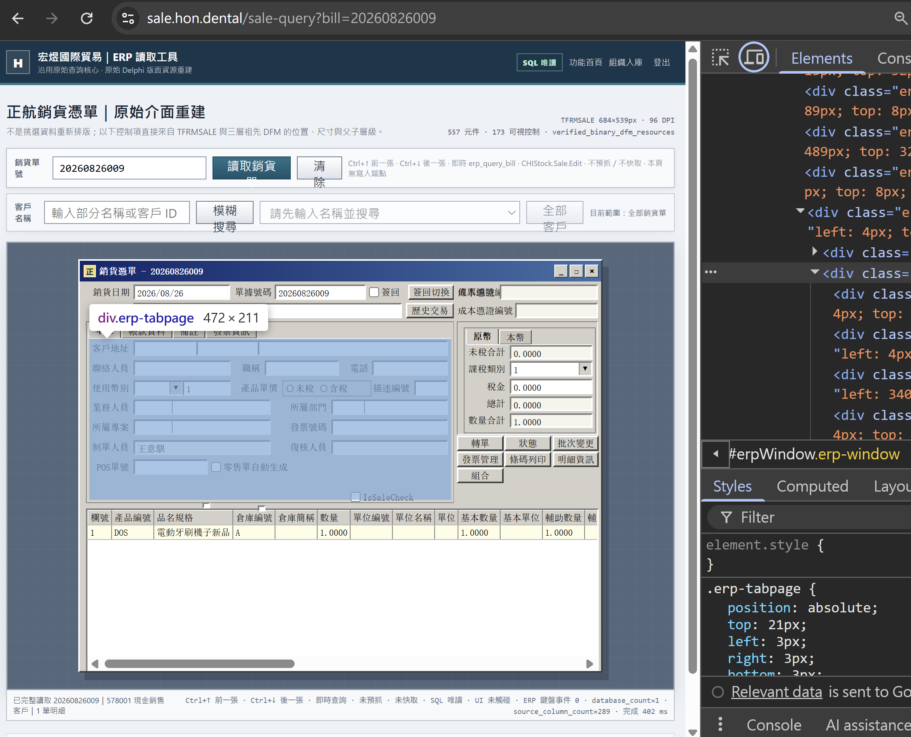
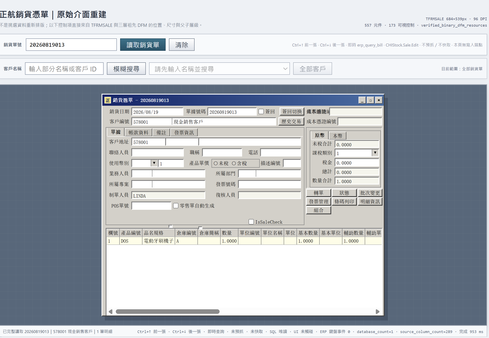

電子發票
品項、稅別、金額要正確，還要留下可查的處理結果。
01 · 要解決的問題
這套 26 年前的 32-bit Delphi ERP 沒有現代 API，也沒有 CLI。人看得到、點得到；但外部系統無法安全、穩定地呼叫。
問題不是 ERP 太舊，而是所有新需求都被卡在「只能由人操作畫面」。

02 · 商業代價
品項、稅別、金額要正確，還要留下可查的處理結果。
付款、Webhook 與 ERP 單據之間，需要可靠對帳。
標籤、追蹤、代收，只能取得完成任務所需的資料。
手機、Mac、Discord 能下單，不等於遠端控制公司電腦。
歷史交易應該變成補貨、回購與交叉推薦訊號。
誰該先跟進、下一步做什麼、結果如何，都要能回到閉環。
不是沒有資料；是資料出不來，外部結果也回不去。
03 · 解題策略
先用反編譯、DFM 與型別研究看懂邊界；再依模組成熟度，選擇其中一條路。
還沒找到穩定 Kernel 時，用 UI 物件名稱與唯讀資料查詢，核對同一張單。
已找到穩定商業物件時，跳過座標、滑鼠與鍵盤，直接走既有規則。
04 · 路線 A


05 · 路線 B
正式流程不再靠視窗位置、焦點或人工節奏。查詢與建立都經固定命令邊界，結果再獨立核對。

06 · AI 工作流


07 · 企業整合

整理品項、金額與處理結果
建立託運、標籤、追蹤與代收
掃碼、紀錄與批次列印
收款狀態、Webhook 與單據對帳
ERP 帳密與原廠元件仍留在受控 Windows 主機；外部服務只拿到完成任務所需的最少資料。後續擴充的是新供應商 Adapter，不必重做 ERP 整合。
08 · 從資料到決策
橋接層負責「可信地拿資料」；分析層負責「下一個最佳行動」。兩邊分開，AI 才不會越權操作 ERP。
這不是把 Chatbot 放在舊流程旁邊。
是先看懂流程、補上接口，再讓 AI 可靠工作。